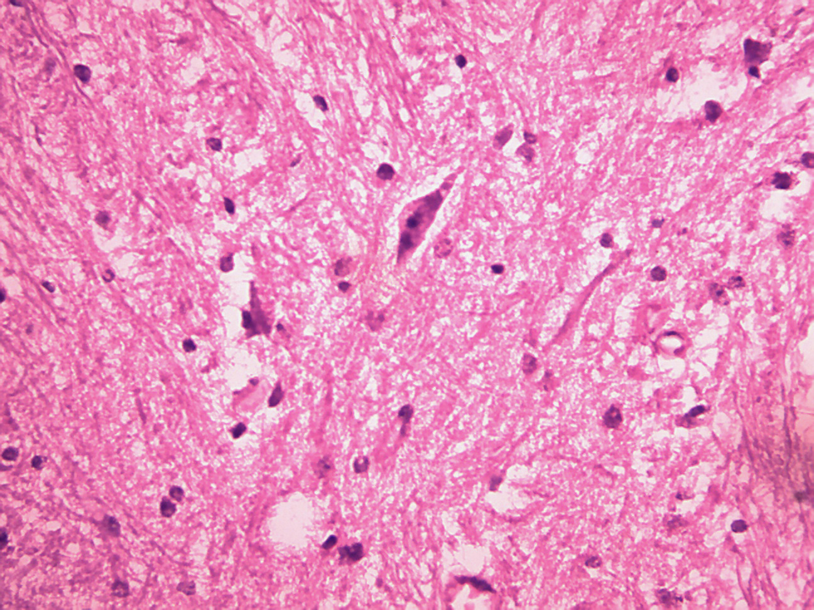
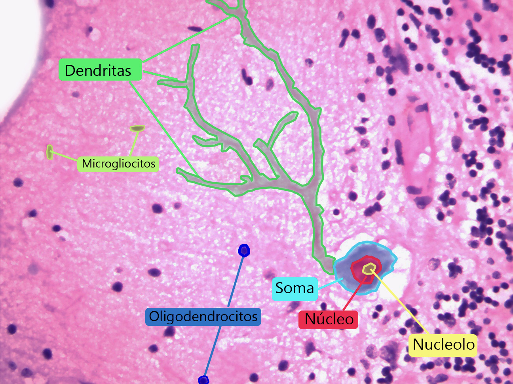
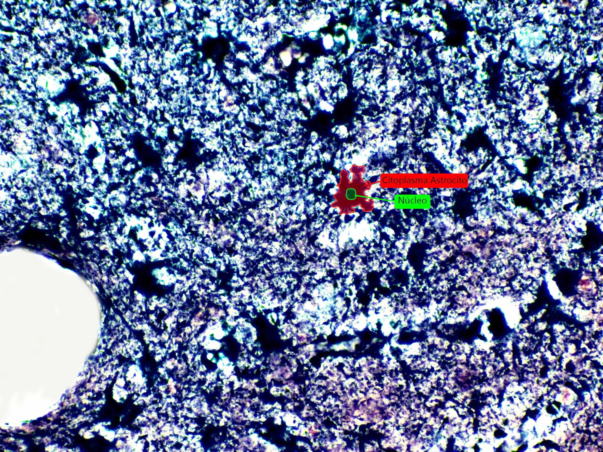
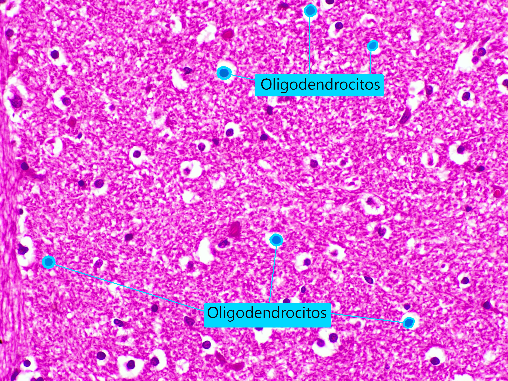

Para hablar del tejido nervioso, comenzaremos con describir el
sitio en el que se encuentra presente, sí el sistema nervioso,
capaz de controlar e integrar las actividades motoras y
sensitivas como las funcionales de los órganos. En la figura 1
describiremos como se subdivide el sistema nervioso y sus
generalidades.
Figura 1. Subdivisión del sistema nervioso.
Tejido nervioso
Tanto el sistema nervioso central y como el periférico se
subdividen en:
Figura 2. Composición del sistema nervioso.
Organización del Sistema Nervioso Central
Al estudiar el sistema nervioso central, se evidencian y definen
dos áreas de tejido que conforman cada una de sus estructuras.
Estas áreas no solo tendrán unas características estructurales,
si no que por su configuración y las células que allí están
presentes, se desarrollaran diferentes procesos fisiológicos;
estas áreas son:
Sustancia gris
En el encéfalo podremos encontrarla en la periferia formando la
corteza, como también organizada en forma de islotes conformando
los núcleos del SNC; por el contrario, en la médula espinal se
encontrará en la región central de esta. Allí, encontraremos los
somas de las neuronas y las dendritas, que en conjunto formaran
el neuropilo y será la principal área de sinapsis del SNC. Para
finalizar, una de las grandes diferencias a simple vista y
macroscópicamente hablando, la sustancia gris tendrá una
tonalidad más oscura que la sustancia blanca; como también,
microscópicamente hablando se encuentran la mayoría de las
células de la glía central.
Organización del Sistema Nervioso Central
Sustancia Blanca
Histológicamente está conformada principalmente por los axones
de las neuronas quienes viajan a diferentes regiones del
sistema nervioso, y gracias a ello, se agrupan formando los
tractos. Su diferencia principal a simple vista desde una
perspectiva macroscópica, la sustancia blanca posee una
tonalidad más clara y pálida en comparación con la sustancia
gris; mientras que, desde una perspectiva microscópica,
podemos observar algunas de las células de la glía periférica,
como también la presencia de algunos vasos sanguíneos
asociados.
Cerebro: Sustancia Gris & Sustancia Blanca. Fuente:
Departamento de Morfología; Universidad Nacional de Colombia;
Tomada por Benavides Riveros, C. 2022
Zona comprendida en la sustancia gris, ya sea en el encéfalo o
la médula espinal, que se encuentra entre los somas neuronales;
conformado principalmente por las proyecciones dendríticas de
las neuronas.
Cerebro: Neuropilo. Fuente: Departamento de Morfología;
Universidad Nacional de Colombia; Tomada por Benavides Riveros,
C. 2022.
En muchos textos es denominada como la unidad estructural y
funcional del sistema nervioso; gracias a que como célula es
capaz de transportar información a través en su interior
gracias a impulsos eléctricos, como también de una neurona a
otra (sinapsis) por la liberación y captación de sustancias
químicas. varían en tamaño y forma y se pueden agrupar según
su forma, su función.
Estructura y componentes funcionales de las neuronas
Cerebro: Neurona. Fuente: Departamento de Morfología;
Universidad Nacional de Colombia; Tomada por Benavides Riveros,
C. 2022.
Clasificación de las neuronas
Para tener claridad en la descripción de los tipos de neuronas,
se debe tener en cuenta que su clasificación está dada según la
forma del soma, su función y por último, según el número de
prolongaciones que se extienden desde el soma.
Clasificación según su función
Neurona sensitiva
Figura 5. Neurona sensitiva.
Cerebro: Neurona Fusiforme. Fuente: Departamento de
Morfología; Universidad Nacional de Colombia; Tomada por
Benavides Riveros, C. 2022.
Cerebelo: Neurona de Purkinje Spielmeyer. Fuente:
Departamento de Morfología; Universidad Nacional de
Colombia; Tomada por Benavides Riveros, C. 2022.
Neurona Pseudomonopolar
Figura 9. Neurona Pseudomonopolar
Clasificación de las neuronas
Neurona Bipolar
Figura 10. Neurona bipolar.

Cerebro: Neurona bipolar. Fuente: Departamento de
Morfología; Universidad Nacional de Colombia; Tomada por
Benavides Riveros, C. 2022.
Clasificación de las neuronas
Clasificación según la forma del soma
Las neuronas también se pueden clasificar según la forma del
soma y de cómo se extienden las dendritas a partir de este. Así,
tenemos neuronas piramidales en la corteza cerebral con el soma
en forma de pirámide, estrelladas en la retina con el árbol
dendrítico orientado en todas las direcciones
Neurona Piramidal
Figura 11. Neurona piramidal.
Cerebro: Neurona Piramidal. Fuente: Departamento de
Morfología; Universidad Nacional de Colombia; Tomada por
Benavides Riveros, C. 2022.
Cerebro: Neurona Estrellada. Fuente: Departamento de
Morfología; Universidad Nacional de Colombia; Tomada por
Benavides Riveros, C. 2022.
Clasificación de las neuronas
Neurona de Purkinje
Figura 13. Neurona de Purkinje.

Cerebelo: Neurona de Purkinje H&E. Fuente: Departamento de
Morfología; Universidad Nacional de Colombia; Tomada por
Benavides Riveros, C. 2022.
Clasificación de las neuronas
Neurona fusiforme
Figura 14. Neurona fusiforme.
Cerebro: Neurona Bipolar. Fuente: Departamento de
Morfología; Universidad Nacional de Colombia; Tomada por
Benavides Riveros, C. 2022.
Células de sostén del sistema nervioso: la glía
En el SNP (sistema nervioso periférico), las células de
sostén se denominan glía periférica; en el SNC (sistema
nervioso periférico), reciben el nombre de glía central.
Sistema Nervioso Periférico: Ganglio Nervioso. Fuente:
Departamento de Morfología; Universidad Nacional de Colombia;
Tomada por Benavides Riveros, C. 2022.
Glía central
Existen cuatro tipos:
Astrocitos
Figura 17. Astrocitos.

Cerebro: Astrocito. Fuente: Departamento de Morfología;
Universidad Nacional de Colombia; Tomada por Benavides
Riveros, C. 2022.
Glía central
Oligodendrocito
Figura 19. Oligodendrocitos.

Cerebro: Oligodendrocito. Fuente: Departamento de
Morfología; Universidad Nacional de Colombia; Tomada por
Benavides Riveros, C. 2022.
Glía central
Microgliocito
Figura 20. Microgliocito.
Cerebro: Microgliocito. Fuente: Departamento de Morfología;
Universidad Nacional de Colombia; Tomada por Benavides
Riveros, C. 2022.
Glía central
Ependimocito
Figura 21. Ependimocitos.
Cerebro: Ependimocito. Fuente: Departamento de Morfología;
Universidad Nacional de Colombia; Tomada por Benavides
Riveros, C. 2022.
Bibliografía
Ross, M., & Wojciech, P. (2016). Histología (7th ed.).
Barcelona: Wolters Klumer.
Stevens, A., Lowe, J., Young, B., & Wheater, P. (2006).
Wheater histopatología básica (4th ed.). Elsevier.
Gartner, L. P., & Lee, L. M. J. (2023). Histologia. Atlas en
color y texto (8a ed.). Wolters Kluwer Health.
Geneser, F. (2000). Histologia Geneser (4ª ed.). Editorial
Medica Panamericana
Welsch, U. (2000). Sobotta. Histología (3ª ed.). Editorial
Medica Panamericana.